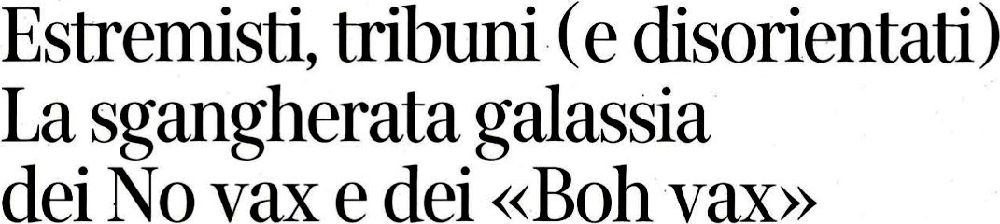
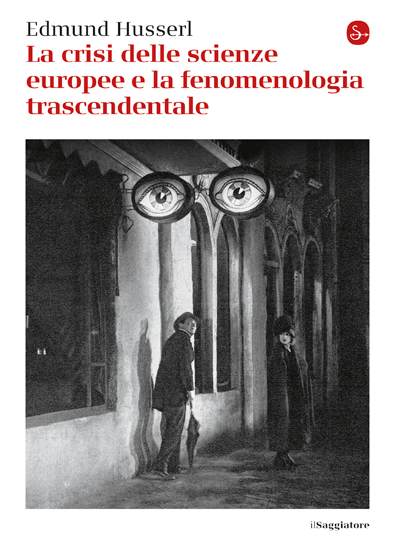
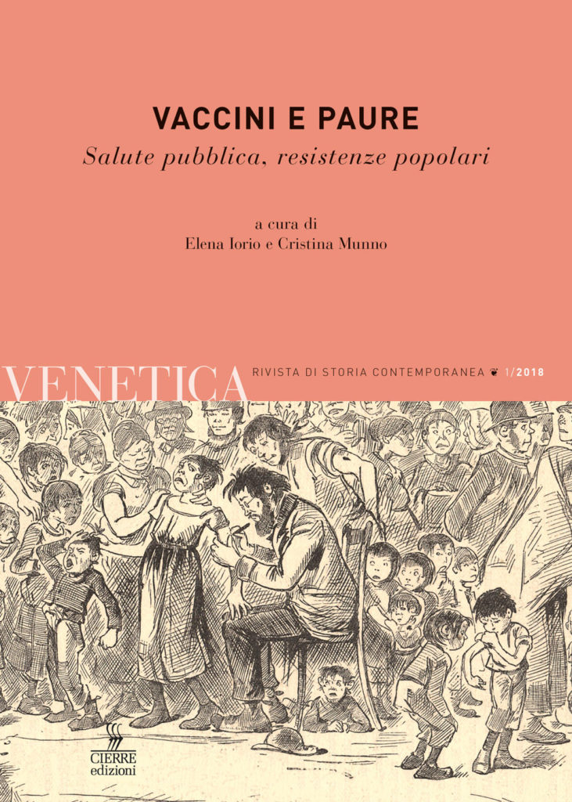
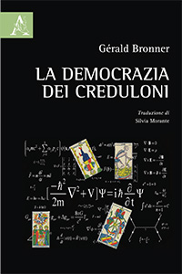
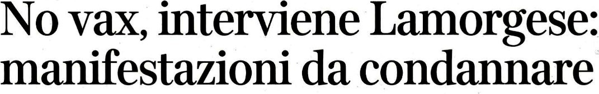

1:14:25 · 11 OPERE
La risposta della politica alle proteste.
Il filo del discorso
Dr Divago commenta la risposta della stampa e della politica alle manifestazioni contro il Green Pass nel luglio 2021. Il punto di partenza è il modo in cui fotografie, titoli e categorie come no-vax e boh-vax costruiscono un’immagine della protesta. Il relatore contesta che la scelta di alcuni personaggi o cartelli possa rappresentare l’intero insieme dei partecipanti; al tempo stesso prende le distanze dallo slogan che equipara i giornalisti a terroristi e riconosce l’inadeguatezza dei paragoni con la persecuzione antiebraica. La lettura ravvicinata di un articolo del Corriere della Sera diventa un’analisi polemica di parole, metafore e presupposti. Dr Divago si sofferma sul passaggio dalla descrizione al giudizio, sul rapporto fra rispetto delle regole e valutazione del loro contenuto e sulla differenza fra l’esposizione di un argomento e una conclusione che chiede soltanto assenso. Le sue accuse di manipolazione e le sue invettive appartengono alla sua interpretazione: la scheda non le trasforma in prove delle intenzioni dei giornalisti o in diagnosi sulle persone. I riferimenti culturali aprono diverse digressioni. Un motto attribuito a Brecht e un richiamo a Stewart Irvin Oost introducono il potere di parole e simboli; Cuore e Io speriamo che me la cavo accompagnano le osservazioni sul linguaggio, mentre Husserl compare nel confronto fra crisi della cultura e ruolo dell’accademia. Il flauto magico serve da esempio estetico della perfezione intesa come equilibrio delle parti. Il titolo ricordato come libro, Non c’è gusto in Italia ad essere intelligenti, corrisponde alla raccolta di Roberto Freak Antoni, distinta dall’album omonimo. Nel passaggio su informazione, algoritmi e competenza compaiono Vaccini e paure, numero monografico di Venetica curato da Elena Iorio e Cristina Munno, e La democrazia dei creduloni di Gérald Bronner. Il relatore contesta l’idea di un pubblico da correggere dall’alto e insiste sulla necessità di spiegare e discutere. Questa critica della comunicazione è distinta dalle sue affermazioni sanitarie: possibilità di contagio dopo la vaccinazione, riduzione del rischio e autorizzazione di un farmaco sono questioni diverse, precisate nelle note. La parte finale riguarda le dichiarazioni dei membri del governo, le prospettive di estensione del certificato e la gestione dell’ordine pubblico. Dr Divago denuncia ciò che considera una pressione sulle scelte individuali e un uso incoerente delle regole, richiamando anche i festeggiamenti sportivi. La lettura di 1984 chiude il discorso sul potere di attribuire nuovi significati alle parole. Le tesi sull’incostituzionalità dei provvedimenti, sulle incompatibilità istituzionali e sulle intenzioni repressive restano posizioni del relatore; le note correggono anche alcune attribuzioni delle dichiarazioni riportate nell’articolo.
I libri nel discorso
Herr Puntila und sein Knecht Matti
Identificazione probabile
Copertina: Suhrkamp BasisBibliothek 50, edizione avviata 2008; scheda attuale ristampa 2026, con commento Anya Feddersen
Immagine fornita attualmente dall’editore per il medesimo ISBN; la ristampa 2026 è successiva al video 2021. Non identificata né datata come l’esemplare impiegato dal relatore.
Riferimento ricavato dalla trascrizione automatica.
Passaggio 1:09 ↗ · Fonti e libro ↗
Estremisti, tribuni (e disorientati). La sgangherata galassia dei No vax e dei «Boh vax»
Titolo dell’articolo (rassegna stampa): Corriere della Sera, 26 luglio 2021, p. 5; titolo riprodotto nella rassegna UCEI/CDEC.
Titolo dell’articolo, dalla rassegna UCEI/CDEC. Firma, data e testata sono riportate nelle pagine della rassegna; l’immagine raffigura il solo titolo. Non copertina libraria o riproduzione integrale del quotidiano.
Titolo riconoscibile nonostante gli errori della trascrizione; testata, nome Goffredo, incipit e riferimenti bibliografici corrispondono all’articolo originale.
Passaggio 7:11 ↗ · Fonti e libro ↗
Cuore
Copertina: BUR · 2011 · edizione cartacea
Immagine autentica dell’opera, controllata visivamente; non identifica l’edizione usata nel video.
Riferimento ricavato dalla trascrizione automatica.
Passaggio 12:48 ↗ · Fonti e libro ↗Non c’è gusto in Italia ad essere intelligenti
Copertina: Feltrinelli, Universale Economica, 1991
Riferimento ricavato dalla trascrizione automatica.
Passaggio 16:34 ↗ · Fonti e libro ↗Io speriamo che me la cavo
Copertina: Mondadori, Oscar bestsellers, 2019; opera pubblicata inizialmente nel 1990
Riferimento ricavato dalla trascrizione automatica.
Passaggio 25:31 ↗ · Fonti e libro ↗
La crisi delle scienze europee e la fenomenologia trascendentale
Identificazione probabile
Copertina autentica del Saggiatore: Il Saggiatore · La cultura 971, edizione 2015 · traduzione Enrico Filippini · ISBN 9788842821731
Copertina ufficiale della ristampa italiana di riferimento. Non ricondotta l’intera opera al solo dopoguerra 1918: sviluppo negli anni Trenta, pubblicazioni parziali e volume postumo vanno distinti. L’edizione fisica citata non è identificabile.
Riferimento ricavato dalla trascrizione automatica.
Passaggio 28:40 ↗ · Fonti e libro ↗
Il flauto magico (Die Zauberflöte, K 620)
Copertina del libretto · Adelphi 2025: Copertina del libretto: Emanuel Schikaneder, Adelphi, Piccola Biblioteca 826, 2025, 274 pagine, ISBN 9788845940613; testo originale a fronte, traduzione di Gian Piero Bona, prefazione di Pietro Citati, saggio di Jurgis Baltrušaitis. È una edizione di riferimento successiva al contesto del video, non un’esecuzione musicale.
Copertina autentica del libretto di Schikaneder: il riferimento nel video riguarda l’opera di Mozart. La pubblicazione del 2025 non viene attribuita al relatore né presentata come partitura.
Riferimento ricavato dalla trascrizione automatica.
Passaggio 39:58 ↗ · Fonti e libro ↗
Vaccini e paure
Copertina: Cierre, Venetica, numero 1/2018
Riferimento ricavato dalla trascrizione automatica.
Passaggio 47:35 ↗ · Fonti e libro ↗
La democrazia dei creduloni
Copertina: Aracne, dicembre 2016, traduzione Silvia Morante
Riferimento ricavato dalla trascrizione automatica.
Passaggio 49:19 ↗ · Fonti e libro ↗
No vax, interviene Lamorgese: manifestazioni da condannare
Identificazione probabile
Titolo dell’articolo (rassegna stampa): Corriere della Sera, 26 luglio 2021, pp. 1–2; titolo riprodotto nella rassegna UCEI/CDEC.
Titolo dell’articolo, dalla rassegna UCEI/CDEC. Firma, data e testata sono riportate nelle pagine della rassegna; l’immagine raffigura il solo titolo. Non copertina libraria o riproduzione integrale del quotidiano.
Lamorgese e le manifestazioni da condannare sono nominate nel passaggio; il successivo richiamo all’articolo riprende titolo e contenuti. Firma e data sono verificate esternamente, non pronunciate.
Passaggio 56:50 ↗ · Fonti e libro ↗
1984
Identificazione probabile
Copertina: Newton Compton · edizione illustrativa
Riferimento ricavato dalla trascrizione automatica.
Passaggio 1:09:11 ↗ · Fonti e libro ↗